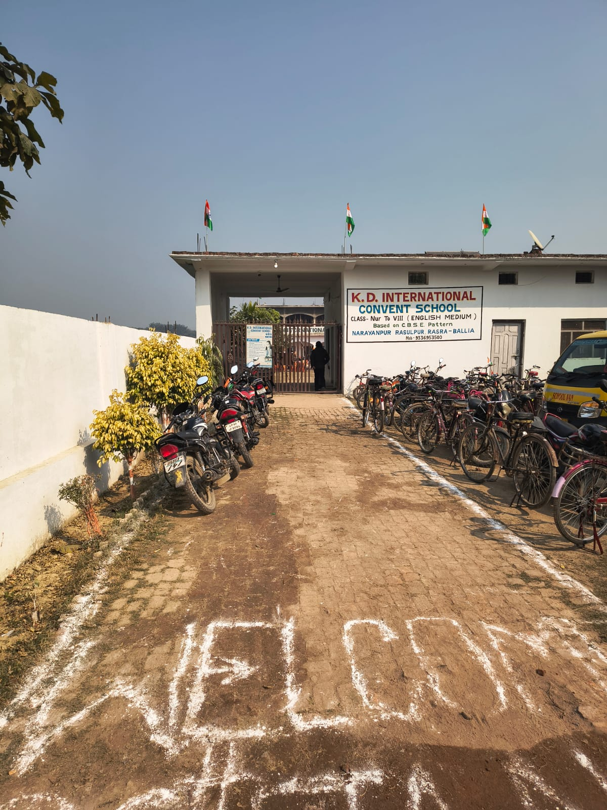
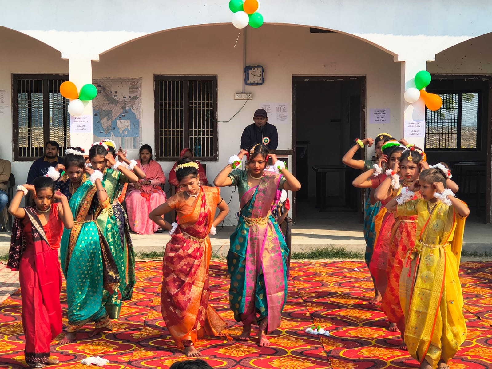
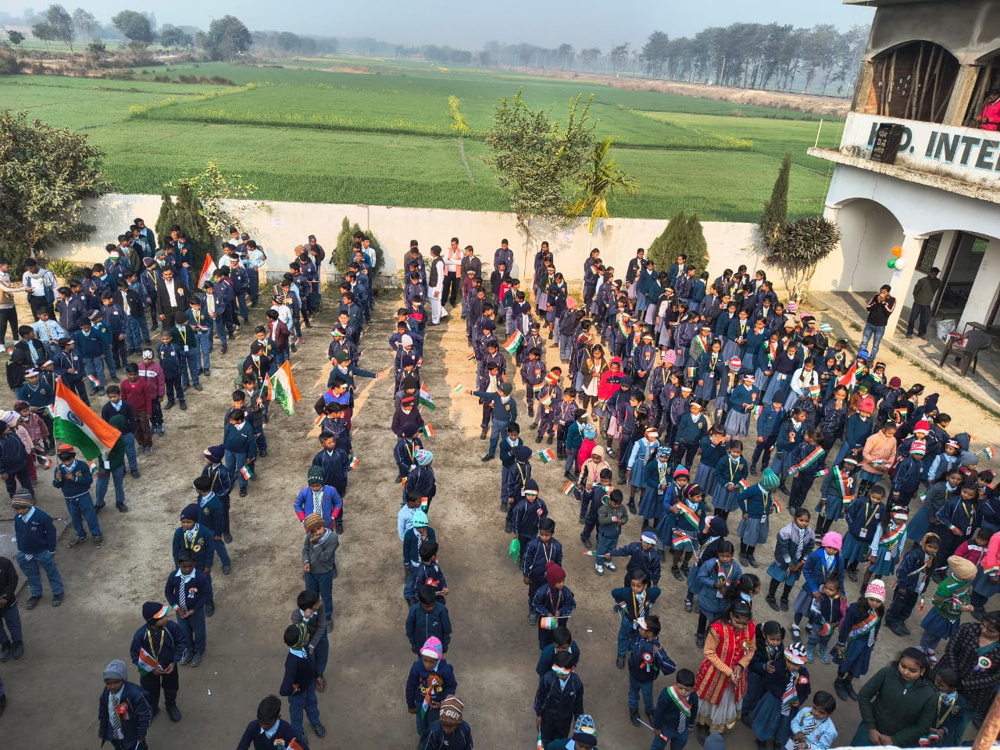
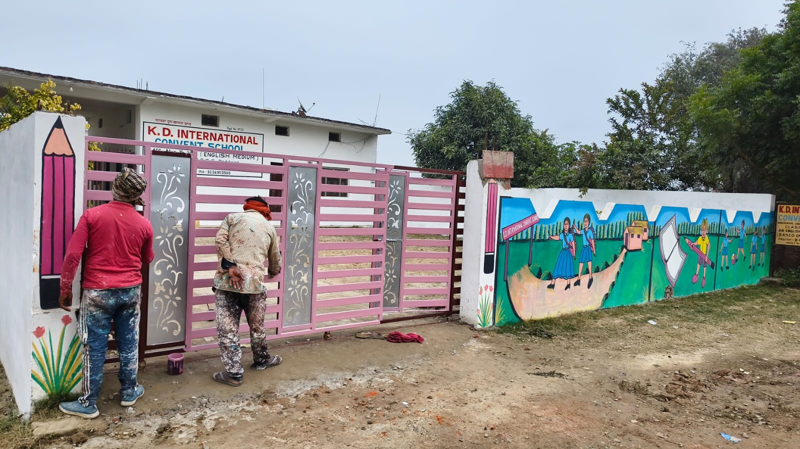

K.D. International Convent School is committed to providing a holistic education that nurtures academic excellence, strong character, and global awareness. Our institution believes in creating a balanced learning environment where intellectual growth goes hand in hand with discipline, moral values, and social responsibility. We focus on developing confident, curious, and compassionate learners who are prepared to meet the challenges of a rapidly changing world. Through a well-structured curriculum, innovative teaching methods, and individual attention, we encourage critical thinking, creativity, and lifelong learning. At K.D. International Convent School, education is not limited to classrooms but extends to shaping responsible citizens with integrity, leadership skills, and a deep respect for cultural diversity.




Address: Narayanpur, Rasra, Ballia
Phone: +91 93369 53500